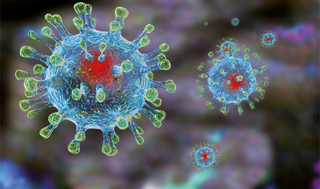

Что такое COVID-19?
На цьому сайті вся важлива інформація про коронавірус
ВАЖЛИВІ ПОСИЛАННЯ
ПРОФІЛАКТИКА
ДЛЯ ВАС
by Vanessa Kolomiiets
Коронавірусну інфекцію викликають РНК-геномні віруси роду Coronavirus. Коронавірус оточений суперкапсидом, який пронизаний рідко розташованими шипами, що мають будову тонких шийок та розташованих на них кулястих головок, що за зовнішнім виглядом нагадує корону.
Для людини хвороботворними є респіраторні та кишкові коронавіруси. Найчастіше зустрічається респіраторний різновид захворювання, який зазвичай діагностується, як гостра респіраторна вірусна інфекція.
Віруси нестійкі у зовнішньому середовищі. Вони миттєво гинуть при температурі понад 56 градусів, руйнуються під дією хлороформу, формаліну, етилового спирту або ефіру. Коронавірус добре переносить заморожування.
Шляхи зараження та механізми розвитку
Причинами коронавірусу є мутації, в результаті яких з'являється новий тип вірусу. Джерелом коронавірусної інфекції, як правило, є хвора людина. При цьому, період контагіозності невизначено довгий.
Джерелом коронавірусу можуть бути деякі звірі (мавпи, птахи, змії та інші). Джерелом нового типу збудника (2019 nCov) стали, ймовірно, кажани. При цьому в даний час немає даних про те, що домашні тварини (такі, як собаки чи кішки) можуть переносити коронавірус 2019 nCov.
Збудники не можуть передаватися безпосередньо через предмети, дверні ручки, посилки, продукти, якщо дотримана гігієна рук і правила кулінарної обробки продуктів. Не можна торкатися забрудненими руками та предметами обличчя, носа, рота, очей. Тому руки рекомендується часто і ретельно мити з милом або обробляти дезіфікуючими засобами.
Вірус передається повітряно-крапельним, повітряно-пиловим, фекально-оральним шляхом. До факторів передачі відносяться виділення носоглотки, блювотних мас, фекалії птахів, тварин, хворої людини.
У людей сприйнятливість до коронавірусу дуже висока, захворювання загрожує всім віковим групам. Антигенна різнорідність вірусів зумовлює значну частоту повторного інфікування збудниками інших серологічних типів.
На сьогоднішній день патогенетичні механізми розвитку коронавірусної інфекції вивчені недостатньо. Вхідними воротами для інфекції є слизова оболонка верхніх дихальних шляхів. При ураженні збудником 2019 nCov інфікування стрімко поширюється на бронхи та легені.
При фекально-оральному механізмі передачі захворювання проявляється у вигляді ураження шлунково-кишкового тракту.
Захворювання супроводжується синтезом антитіл, які не гарантують захисту від повторного зараження.
Клінічні прояви:
Для більшості коронавірусних інфекцій інкубаційний період обмежений 2-3 добами. Однак, для коронавірусу 2019 nCov цей період може становити від 1 до 14 днів (в середньому 10 днів).
Протягом усього цього періоду людина може заражати інших. Протікає захворювання, найчастіше, як звичайний грип, парагрип або будь-яка інша гостра респіраторна інфекція з усіма характерними для них ознаками.
